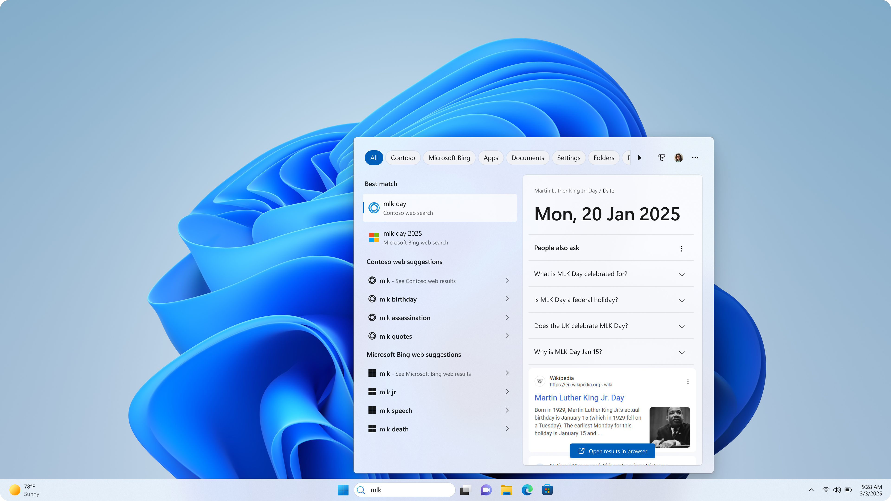

Windows Search web search providers
Windows Search currently uses the Web Search from Microsoft Bing app to return web content and search results. In the European Economic Area (EEA), you can install apps that implement a web search provider to return web content and search results in Windows Search.

Search providers integrate with the Search experience by creating an MSIX package with a package manifest file that provides the required information for the OS to register the search provider. After installation, the search provider is enabled by default in Windows Search experiences. In the Windows Settings app, users can enable and disable installed search providers and manage the order of providers in search results. Users can remove a search provider through the Settings > Apps > Installed apps page in Windows Settings app.
For development and testing, when Developer Mode is enabled and the search provider app has been sideloaded on the device, it will appear in the list of available search providers. For more information, see Developer Mode features and debugging.
Once the search provider is registered with the OS, user queries are passed to the HTTP endpoint specified by the provider in their package manifest using a standardized query string. The endpoint returns suggested results in a JSON document. With each suggested URL in the response document, the search provider includes the preview endpoint URL, which returns an HTML document that is displayed in the preview pane in the search results UI.
This article provides guidance for creating a search provider app package and details about the protocols for implementing search provider HTTP endpoints.
Create a search extensibility app package
Search providers register with the OS by providing an MSIX package that contains required information about the provider, such as the name of the search provider and the HTTP endpoints for suggestions and previews.
Search provider app extension
The app package manifest file supports many different extensions and features for Windows apps. The app package manifest format is defined by a set of schemas that are documented in the Package manifest schema reference. Search providers declare their registration information within the uap3:AppExtension. The Name attribute of the extension must be set to "com.microsoft.windows.websearchprovider".
Search providers should include the uap3:Properties as the child of uap3:AppExtension. The package manifest schema does not enforce the structure of the uap3:Properties element other than requiring well-formed XML. The rest of this section describes the XML format that the OS expects in order to successfully register a search provider.
<uap3:Extension Category="windows.appExtension">
<uap3:AppExtension Name="com.microsoft.windows.websearchprovider" DisplayName="SearchExampleApp" Id="ContosoSearchApp" PublicFolder="Public">
<uap3:Properties>
<!-- Search provider registration content goes here -->
</uap3:Properties>
</uap3:AppExtension>
</uap3:Extension>
Element hierarchy
uap3:Properties
EndPoint
Protocol
Endpoint
The URL of the HTTPS endpoint to which the OS will send search query requests.
Protocol
The protocol schema that will be used when launching the provided web search results. If the specified protocol is not registered by an app on the OS, then the default browser will be launched for search results. For more information on registering protocol schemas, see uap:Protocol.
DynamicContentEndpoint
This feature is no longer supported. For more information see Implement a gleam icon endpoint. The URL of the HTTPS endpoint to which the OS will send a request for the gleam icon to be displayed in the search box.
Example package manifest file
The following is an example appmanifest.xml package manifest file for registering a Windows Search provider.
<!-- appxmanifest.xml -->
<uap3:Extension Category="windows.appExtension">
<uap3:AppExtension Name="com.microsoft.windows.websearchprovider" DisplayName="CustomSearch" Id="CustomSearchApp" PublicFolder="Public">
<uap3:Properties>
<Endpoint>https://customsearchendpoint</Endpoint>
<Protocol>customsearch</Protocol>
<DynamicContentEndpoint>https://sub.contoso.com/dynamic</DynamicContentEndpoint>
</uap3:Properties>
</uap3:AppExtension>
</uap3:Extension>
<uap:Extension Category="windows.protocol">
<uap:Protocol Name="customsearch"/>
</uap:Extension>
Implement a Windows Search provider suggestion endpoint
Search providers must expose and register an HTTPS endpoint that is called by the OS when a user types into the Windows Search box. This endpoint should return a JSON-formatted string containing the search suggestions for the provided user query. Content must be delivered over HTTPS. Search integration does not support content delivered over HTTP.
Suggestion HTTPS request format
The HTTPS request to the suggestion endpoint uses the following format.
https://contoso.com?setlang=en-US&cc=US&qry=
The query string parameters passed to the suggestion endpoint are the following.
| Parameter | Description |
|---|---|
| setlang | The locale associated with the query. |
| cc | The country code associated with query. |
| qry | The query provided by the user. If the parameter has no value, i.e. appears in the query string as qry=, then the user query is empty. Search providers can still provide suggestions and preview pages in response to an empty query. NOTE The OS does not perform any sanitization of query strings. Search providers can implement their own sanitization when the query is received. |
Suggestion HTTPS response headers
Search provider must include the following headers in the response from the suggestion HTTPS endpoint.
- Access-Control-Allow-Origin: https://www.bing.com
- Access-Control-Allow-Credentials: true
- Access-Control-Allow-Methods: GET
- Content-Type: application/json; charset=utf-8
- Content-Length: [Must be the exact length of response]
Suggestion response JSON format
The search provider HTTPS endpoint for suggestions must return a JSON document with the following format. The key names must match the format exactly.
| Key | Description |
|---|---|
| Suggestions | Contains a list of JSON objects with key Attributes representing the suggestions associated with the user query. |
| Attributes | Contains the attributes of a suggestion. |
| url | The URL for the search suggestion on the provider web site. |
| query | The user query associated with the search suggestion. |
| previewPaneUrl | The URL of the preview endpoint from which an HTML preview of the suggestion can be retrieved. |
| Text | The text description of the suggestion. |
{"Suggestions":
[{"Attributes":
{"url":"https://www.contoso.com/search?q=projection+matrix","query":"projection matrix","previewPaneUrl":"http://www.contoso.com/preview"} ,"Text":"projection matrix"},
{"Attributes":
{"url":"https://www.contoso.com/search?q=rotation+matrix","query":"rotation matrix","previewPaneUrl":"http://www.contoso.com/preview"} ,"Text":"rotation matrix"}
]
}
Implement a Windows Search provider preview endpoint
Search providers return the URL of an HTTPS endpoint that provides an HTML preview of the page associated with each suggestion in the search results. The preview endpoint response must return the HTML code for a functioning page.
Preview HTTPS request format
The HTTPS request to the preview endpoint uses the following format.
https://contoso.com?Darkschemeovr=1
The query string parameters passed to the suggestion endpoint are the following.
| Parameter | Description |
|---|---|
| Darkschemeovr | Specifies if the calling Windows system has dark theme enabled. The value is 1 if dark theme is enabled and 0 if the dark theme is disabled. |
Preview HTTPS response headers
- Access-Control-Allow-Origin: https://www.bing.com
- Access-Control-Allow-Credentials: true
- Access-Control-Allow-Methods: GET
- Content-Type: text/html; charset=utf-8
- Content-Length: [Must be the exact length of preview html]
OPTIONS request and Cross-Origin Resource Sharing (CORS)
Search providers must support the OPTIONS request method and respond to this request with HTTP OK. If the search provider endpoint is using CORS, the Windows search client will send out a HTTP OPTIONS request before each GET request.
Implement a gleam icon endpoint
Note
This gleam feature is no longer enabled. Gleam icons are no longer displayed for all web providers in the EEA. The content in this section of the documentation is obsolete.
Search providers can optionally provide light and dark mode gleam icons that are displayed in the search bar when the search provider is currently enabled. When the DynamicContentEndpoint element is provided in the app manifest, a request will be sent to the specified URL and the search provider responds with a json file in the format defined below that includes the URLs of the icon image files and other metadata. The gleam icon request will be sent periodically while the search provider is the most recent provider active in Windows Search. The cadence for this request is every 6 hours. A request will also be sent upon each Search launch and on device unlock.
Gleam icon HTTPS request format
The HTTPS request to the gleam icon endpoint uses the following format.
https://www.contoso.com/Gleam?cc=FR&setlang=en-us&dateTime=3%2F29%2F2024%2C%208%3A33%3A56%20PM&deviceOs=windows10&schemaversion=1.0.0
The query string parameters passed to the suggestion endpoint are the following.
| Parameter | Description |
|---|---|
| setlang | The locale associated with the query. |
| cc | The country code associated with query. |
| dateTime | The current date and time from client device, url-encoded. |
| deviceOs | The OS of the client device. The value of this parameter can be "Windows10" or "Windows11". On Windows 10, the gleam icon size is 30x60. On Windows 11, the gleam icon size is 20x36 |
| schemaversion | The gleam schema version. |
Gleam icon response JSON format
The search provider HTTPS endpoint for gleam icons must return a JSON document with the following format. The key names must match the format exactly. The current schema version is 1.0.0.
| Key | Description |
|---|---|
| schemaVersion | The gleam schema version. This should match the schemaVersion query string parameter in the request. |
| telemetryId | A unique identifier for the gleam icon. If the value in the response is the same as the value for the current gleam icon, the OS will not update the icon. |
| expirationTime | The expiration time for the gleam icon. Must be a time in the future. |
| content | The content section of the response. |
| taskbarSearchBox | Contains settings for the search box. |
| gleam | Contains settings for the gleam icon. |
| altText | Alternate text for the gleam icon. |
| dimensionEnum | The value "30x60" if the request was sent from a Windows 10 device. The value "20x36" if the request was sent from a Windows 11 device. |
| iconUrl | Contains the URLs for the light and dark gleam icon image files. |
| light | The URL for the light gleam icon image file. |
| dark | The URL for the dark gleam icon image file. |
{
"schemaVersion":"1.0.0",
"telemetryId":"<unique gleam Id>",
"expirationTime":"2025-12-09T20:37:13Z",
"content": {
"taskbarSearchBox": {
"gleam":{
"altText": "<alt text of the gleam>",
"dimensionEnum": "(30x60 for Windows 10, 20x36 for Windows 11)",
"iconUrl": {
"light":"<3p's light gleam url>",
"dark": "<3p's dark gleam url>"
}
}
}
}
}
Gleam icon response validation
The response must specify both the light asset URL and the dark asset URL. The domains for the icon image URLs must use HTTPS and the subdomain must match the subdomain specified in the DynamicContentEndpoint element in the app manifest file.
The image files must be in SVG format and the maximum file size is 300 kB. The gleam needs to be within a 240x120px frame inside the SVG.
If an empty payload is received, that will clear the active gleam icon and no gleam will be displayed.